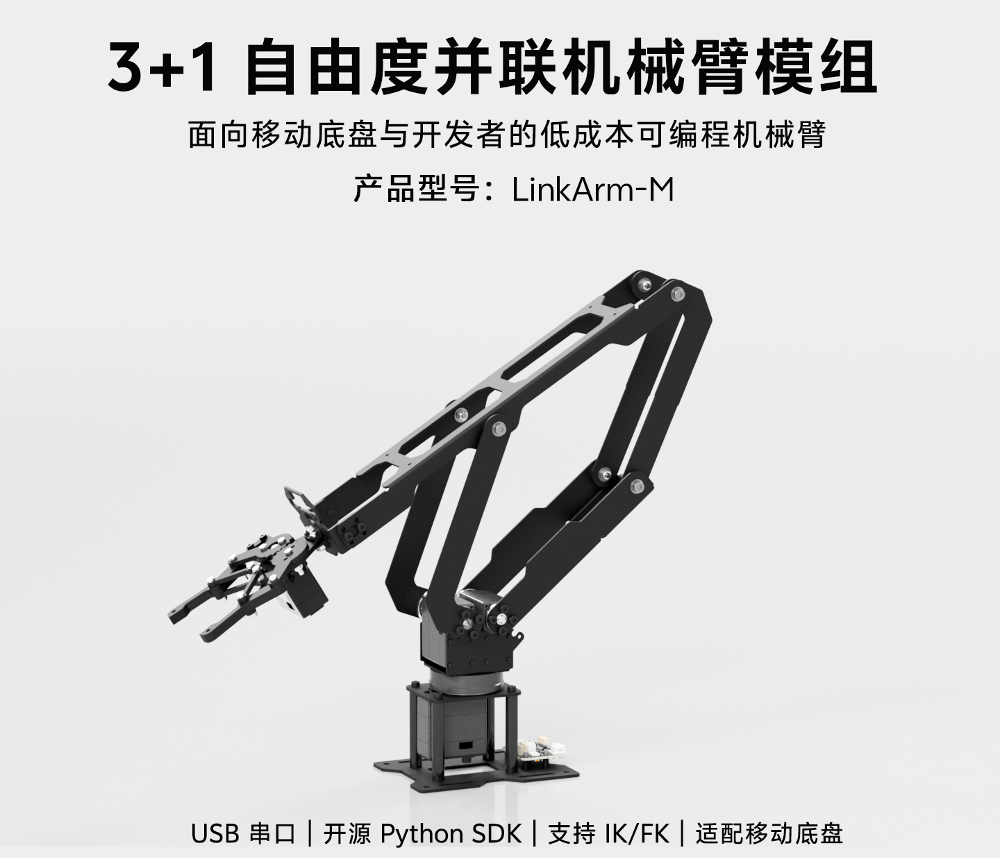
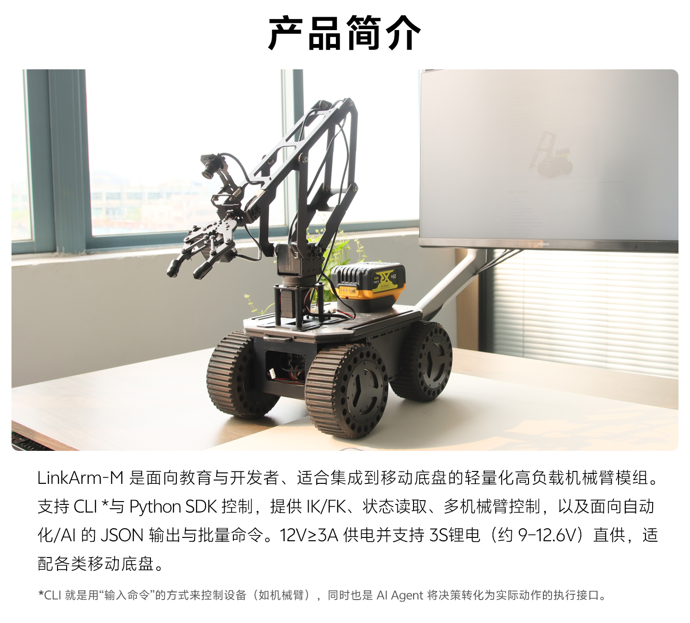
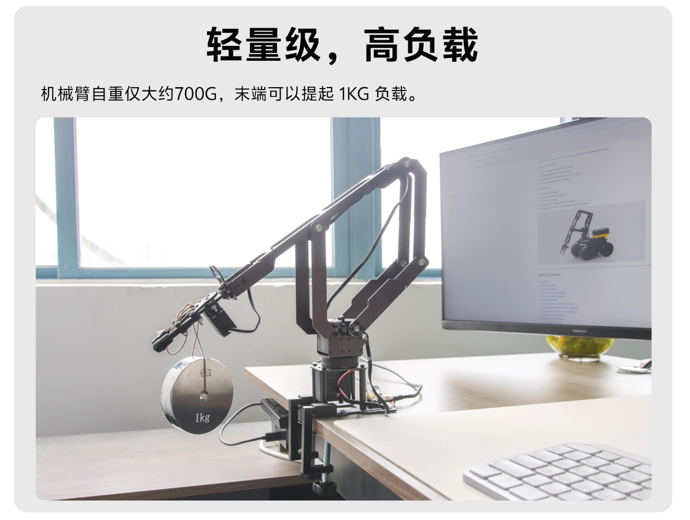
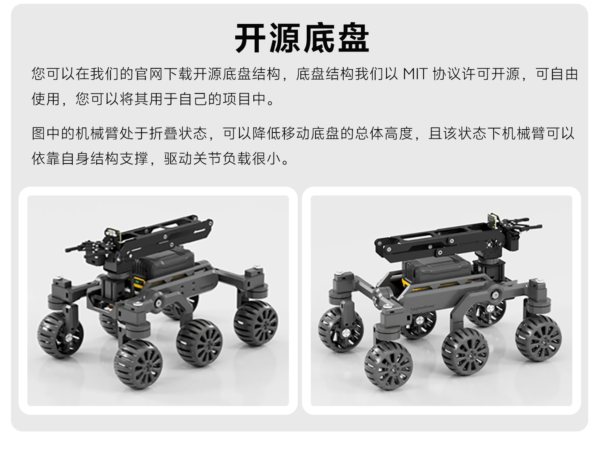
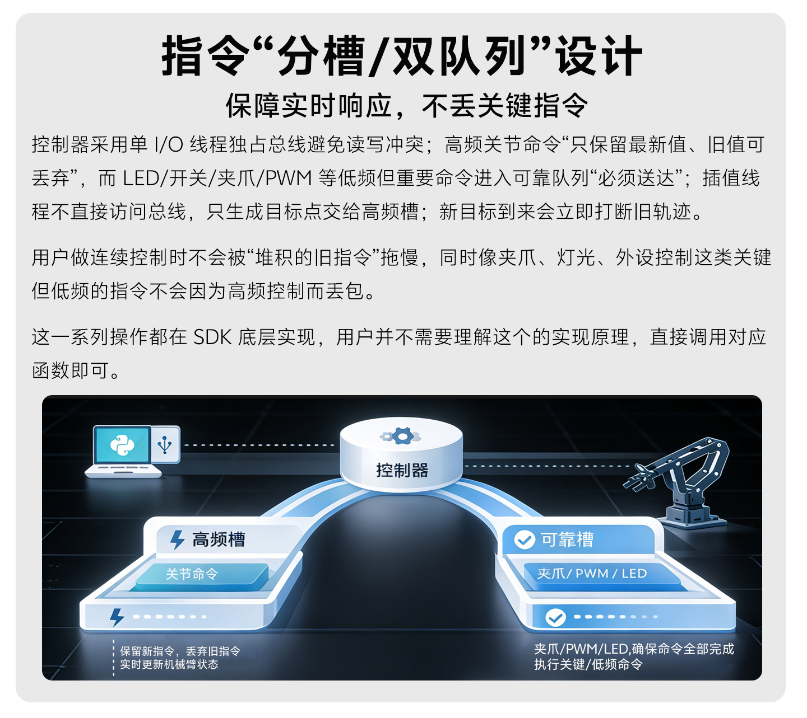
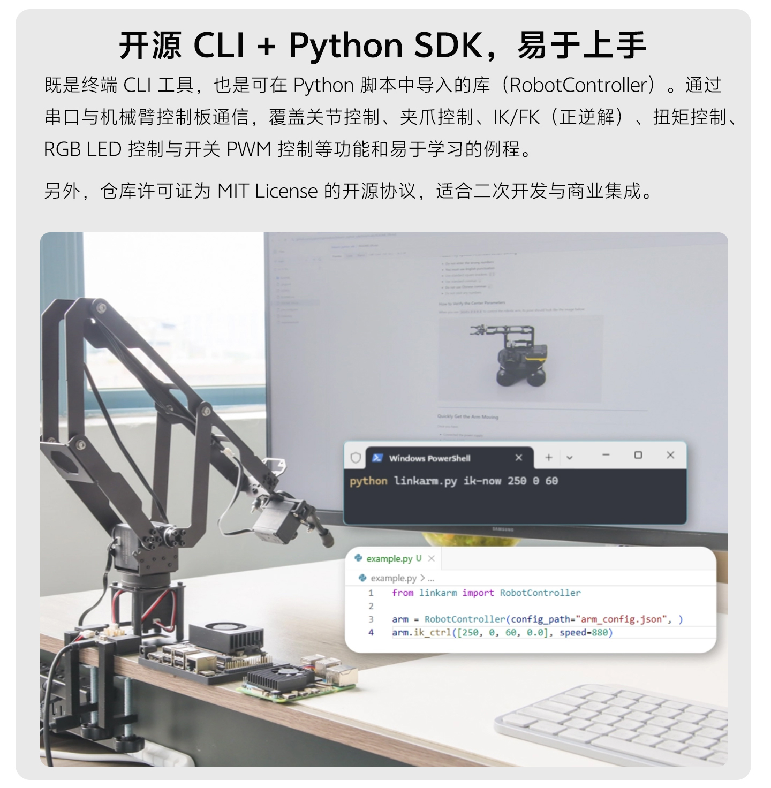
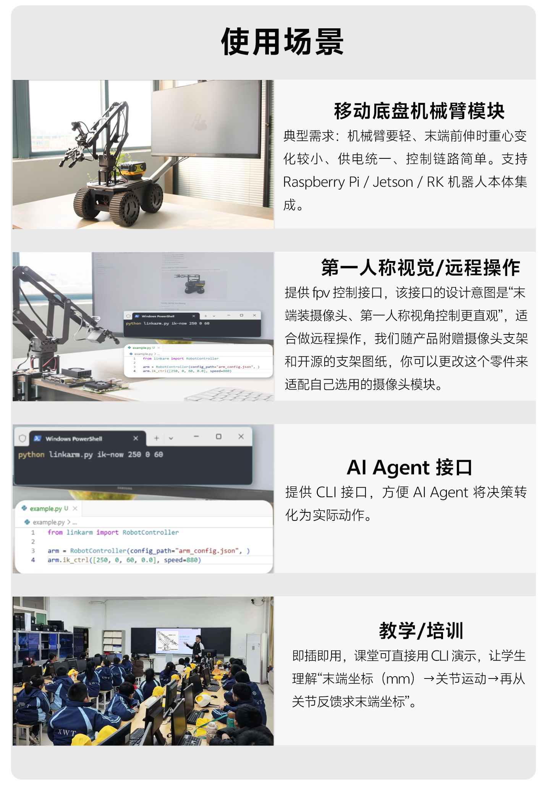
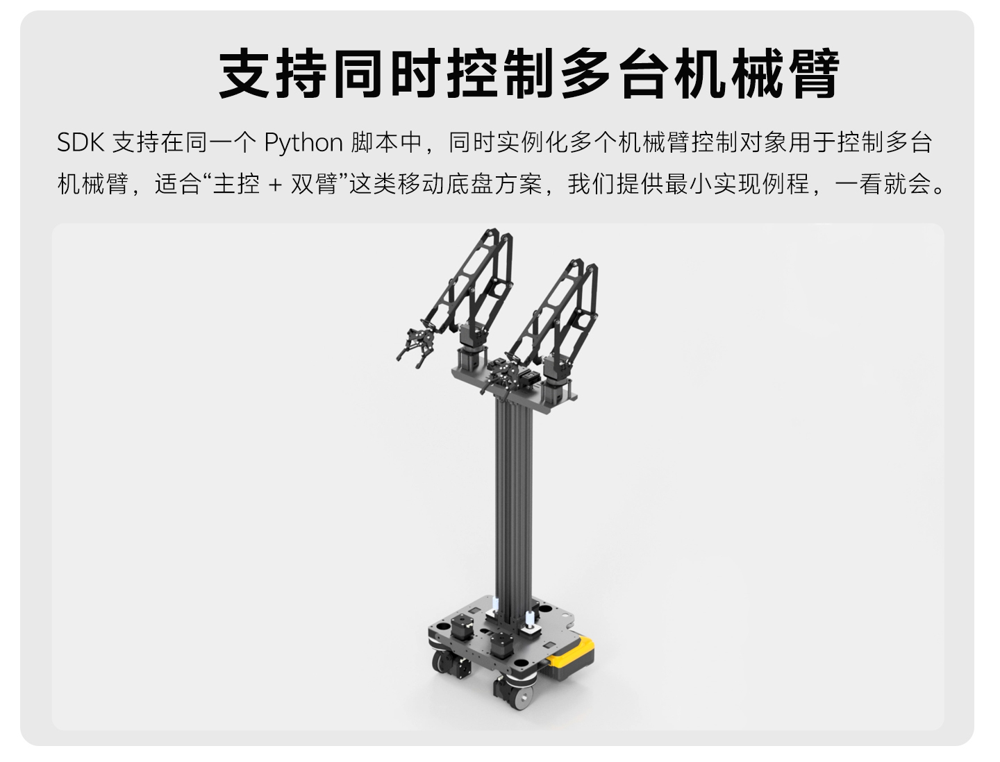
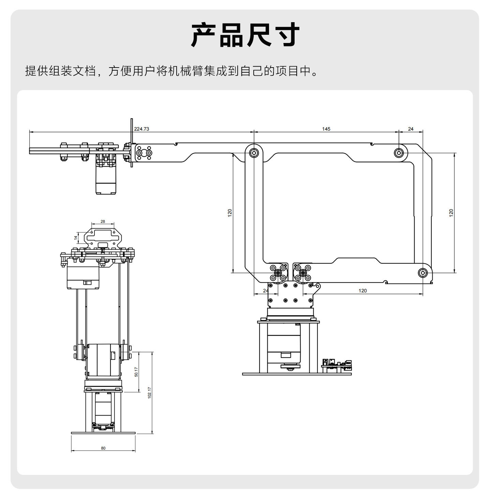
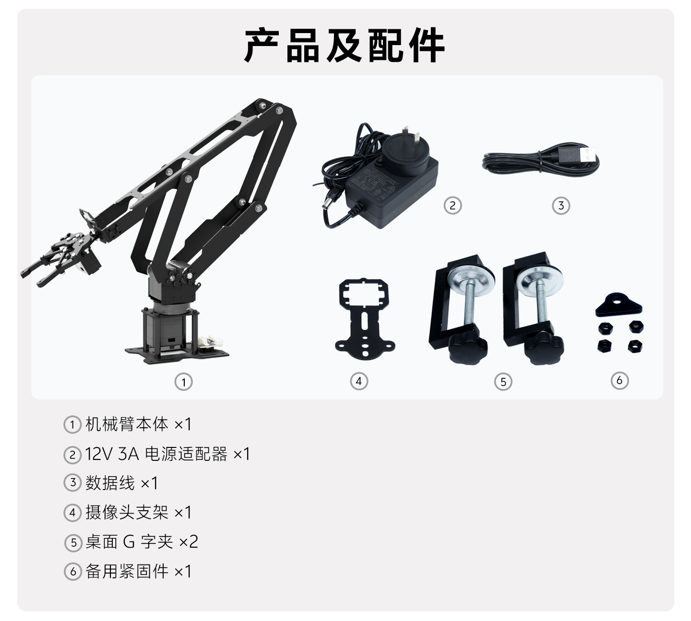

3+1 DOF parallel arm module
LinkArm-M
面向移动底盘与开发集成的轻量高负载机械臂模组
现有资料显示，LinkArm-M 采用 3+1 自由度并联结构，重点不是“演示型机械臂”，而是更适合接入 Raspberry Pi、Jetson、RK 主控或 PC 的工程化执行模组。它保留 USB 串口主机控制方式，开放 CLI 与 Python SDK，并明确给出 IK / FK、状态读取、JSON 输出、多命令批量执行和多机械臂控制路径。
供电边界要先确认：USB 只负责通信，不给机械臂主动供电。资料明确要求使用 12V 直流电源且电源能力不低于 3A，或使用约 9~12.6V 的 3S 锂电直供。




Core capabilities
把“能动起来”变成“便于编程、便于集成、便于批量调用”
页面内容只整理当前素材中能直接确认的信息，不扩写未明确给出的控制器、协议或负载细节。现有资料的重点非常清楚：LinkArm-M 追求的是面向开发者的低门槛控制链路，以及适合移动平台的轻量化结构。
并联机械臂结构
并联结构面向移动底盘应用，资料明确强调轻量高负载，并通过结构件吸收冲击，降低对舵机齿轮的瞬态冲击。
开源 Python SDK + CLI
既可在终端直接发命令，也可在 Python 脚本中导入 RobotController 控制对象继续二次开发。
支持 IK / FK 与状态读取
资料给出 IK 逆解、FK 正解和 status 状态读取路径，适合课堂演示、主控联调和自动化程序接入。
多机械臂同步控制
SDK 支持在一个 Python 脚本内同时实例化多个控制对象，适合“主控 + 双臂”或多工位实验平台。
供电适配移动平台
支持 12V 直流供电，电源能力要求不低于 3A；也支持约 9~12.6V 的 3S 锂电池直供。
支持 JSON 输出与批量命令
资料把 AI / Agent 场景讲得比较明确，支持 --json-output 和 exec 批量执行，便于把决策转成动作链。

Reliable control path
连续控制和关键动作分流处理，减少“旧指令堆积拖慢实时响应”
现有资料对控制链路给出了比较明确的解释：高频关节命令只保留最新目标值，适合实时运动；夹爪、PWM、LED 这类低频但关键的动作进入可靠队列，强调“必须送达”。对连续控制、远程操控或 AI 调度来说，这种设计比简单串口透传更容易把行为稳定下来。
- 高频槽：用于关节运动目标更新，新目标到来会立即打断旧轨迹。
- 可靠槽：用于夹爪、PWM、LED 等关键低频动作，强调完整执行。
- 用户侧接口保持简单：资料说明这些策略由 SDK 底层实现，调用接口不需要额外理解队列细节。
- 适合自动化流程：对“频繁位置更新 + 必须完成的末端动作”这类混合任务更友好。
适用边界：LinkArm-M 不是脱机机械臂。FAQ 明确写明它需要外部主机运行 SDK，经 USB 串口控制机械臂。
Open SDK workflow
从命令行验证到 Python 集成，现有资料已经给到完整上手路径
LinkArm-M 当前提供的不是单一示例脚本，而是一套偏完整的开发入口。资料明确提到教程截图、首次连接、串口号配置、中位校准、CLI 总览、Shell 模式、多机械臂控制和常见问题，比较适合先快速跑通，再逐步嵌入真实项目。
单关节控制
多关节同步控制
IK 逆解
FK 正解
status 状态读取
gripper 夹爪控制
LED 控制
PWM 输出
扭矩开关与限制
FPV 风格即时运动

环境边界
- 支持 Windows、macOS、Raspberry Pi、Jetson 与可运行 Python 的 USB 主机。
- 建议 Python 3.8 及以上版本。
- macOS 使用前可能需要安装 CH34x / CH343 USB-UART 驱动。
Application scenes
适合移动底盘、远程操作、AI 接口和教学训练四类典型使用场景
现有详情资料把使用场景说得很具体，不是泛泛地写“适用于科研教育”。下面这些内容都能在现有素材中直接对应到图文说明。
- 移动底盘机械臂模组：强调机械臂更轻、前伸时重心变化较小，适合 Raspberry Pi / Jetson / RK 主体集成。
- 第一人称视觉 / 远程操作：资料提到 FPV 控制接口，并随产品附带摄像头支架与开源支架图纸。
- AI Agent 接口：CLI 与 JSON 输出适合把程序决策转成实际动作。
- 教学 / 培训：可直接用 CLI 演示末端坐标、关节运动和状态反馈之间的对应关系。

资料还提供多机械臂控制示例，适合双臂协作平台或多工位演示。

Integration and delivery
安装、供电、配件和尺寸资料已经能支撑首轮集成评估
除了 SDK，LinkArm-M 的当前素材还补齐了尺寸图、交付清单、开源底盘说明和桌面固定方式。对于要先做空间评估、再决定是否进入二次设计的团队，这一层资料已经基本够用。
桌面固定
交付清单包含两只桌面 G 字夹，适合先在桌边快速固定、验证串口、校准中位和跑基本动作。
摄像头支架
配件中明确包含摄像头支架一件，资料还提到可按开源图纸继续改造，适配自选摄像头模组。
供电与接口
供电接口为 DC5521，标配 12V 3A 适配器；USB Type-C 用于数据通信，不作为机械臂主动供电口。


Specifications
可直接确认的产品规格参数
| 产品名称 | LinkArm-M（3+1 自由度并联机械臂模组） |
|---|---|
| 控制方式 | USB 串口通信，由主机端运行 CLI / Python 控制 |
| SDK 形态 | Python SDK + CLI + Shell + exec + --json-output |
| 支持平台 | Windows / macOS / Raspberry Pi / Jetson / 具备 USB 接口并支持 Python 的主机 |
| 推荐 Python 版本 | Python 3.8 及以上 |
| 供电输入 | 12V 直流供电且电源能力不低于 3A；支持 3S 锂电约 9~12.6V 直供 |
| USB 说明 | USB 仅负责通信，不为主动动力供电 |
| 供电接口 | DC5521 |
| 默认波特率 | 500000 |
| 运动学能力 | IK（ik / ik-now）、FK（fk）、status 状态读取 |
| 夹爪控制 | gripper：0 为最大张开，-1 为完全闭合，最小可到 -1.5 更紧 |
| 舵机类型 | 飞特 SCS 系列总线舵机，型号 SC-1500-C023 / SC-1500-C024 |
| 臂展 Reach | 330 mm |
| 基座旋转角度 | 180° |
| 自重 | 约 700 g |
| 最大负载 | 末端可提约 1 kg 负载 |
| 外设扩展 | 板载 LED 控制与 PWM 输出（通道 0 / 1，范围 0~1024） |
| 标配电源适配器 | 12V 3A |
FAQ
资料里已经回答的关键问题
适合新手吗？
适合愿意照着教程操作的新手，但需要先按现有文档完成一次配置与校准，再开始命令控制。
能在 macOS 上使用吗？
可以。资料说明支持 macOS，但识别 USB 串口前可能需要安装 CH34x / CH343 驱动。
能同时控制两台或多台机械臂吗？
可以。SDK 资料明确给出多机械臂控制思路：在同一个 Python 脚本中实例化多个控制对象即可。
只插 USB 不接电源能动吗？
不能。USB 只负责通信，机械臂模块必须由 12V 或 3S 锂电提供动力电源。
必须接电脑或主控吗？
是。FAQ 明确写明需要外部主机运行 SDK，经 USB 串口控制硬件层。
支持 IK、FK 和状态反馈吗？
支持。资料中给出 ik / ik-now、fk、status 等接口说明。